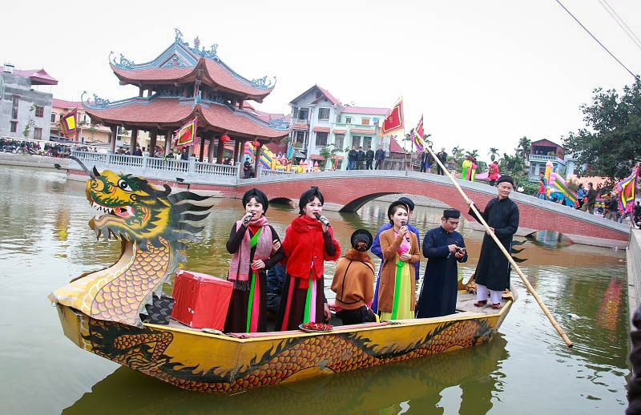

Nơi tiếng hát Quan họ chắp cánh trên mặt hồ — lễ hội truyền thống
đặc sắc nhất vùng Kinh Bắc từ hàng trăm năm qua
Hội Lim là lễ hội dân gian truyền thống lớn nhất của tỉnh Bắc Ninh, được tổ chức hàng năm vào ngày 13 tháng Giêng âm lịch tại thị trấn Lim, huyện Tiên Du. Lễ hội mang đậm bản sắc văn hóa vùng Kinh Bắc với hàng nghìn năm lịch sử.
Theo truyền thuyết dân gian, Hội Lim bắt nguồn từ những buổi hát thờ tại đền thờ ông Hiếu Trung Hầu — người có công truyền bá và phát triển dân ca Quan họ trong vùng. Từ đó, lễ hội trở thành không gian văn hóa thiêng liêng gắn kết cộng đồng qua tiếng hát ngọt ngào.
Năm 2009, dân ca Quan họ Bắc Ninh được UNESCO công nhận là Di sản văn hóa phi vật thể đại diện của nhân loại, đưa Hội Lim lên tầm quốc tế.

Hội Lim có cấu trúc hai phần rõ ràng: phần lễ trang nghiêm với các nghi thức tế thần, và phần hội sôi động với vô số hoạt động văn hóa đặc sắc mang đậm hồn quê Bắc Ninh.
Liền anh liền chị trong trang phục áo tứ thân, nón quai thao duyên dáng hát đối đáp trên những con thuyền thả giữa hồ Lim — khung cảnh thơ mộng và đẹp đẽ nhất của lễ hội.
Nghi lễ rước kiệu từ đình làng lên núi Lim với đoàn người hàng trăm người mặc trang phục truyền thống, tạo nên không khí linh thiêng, trang trọng của ngày hội.
Đấu vật, đấu cờ người, đu tiên, thi dệt vải, thi làm cỗ — hàng chục trò chơi dân gian độc đáo thu hút hàng nghìn người dân và du khách tham gia trải nghiệm.
"Hát Quan họ không chỉ là âm nhạc — đó là lời tỏ tình của đất trời, là sợi chỉ vàng nối hai bờ sông Cầu lại với nhau."
— Nghệ nhân Quan họ Bắc Ninh
Hội Lim không chỉ là lễ hội — đó là hành trình về với cội nguồn văn hóa Kinh Bắc, nơi du khách được đắm mình vào không gian của những câu hát ân tình, trang phục truyền thống rực rỡ và ẩm thực đậm đà vùng quan họ.
Từ Hà Nội, bạn có thể dễ dàng đến Bắc Ninh qua nhiều phương tiện. Nên đến sớm vào buổi sáng để trải nghiệm trọn vẹn nghi lễ rước kiệu và hát Quan họ trên thuyền — tiết mục đẹp nhất của lễ hội được tổ chức từ 8–11 giờ sáng.
Mặc trang phục lịch sự, ưu tiên áo dài hoặc trang phục truyền thống để hòa vào không khí lễ hội và chụp ảnh kỷ niệm đẹp hơn.
Chính hội ngày 13 rất đông. Nên đến trước 7h sáng để có vị trí đẹp xem rước kiệu, và ở lại đến tối để thưởng thức hát Quan họ dưới ánh đèn lồng.
Đừng bỏ lỡ bánh phu thê (xu xê) — đặc sản truyền thống Đình Bảng, cùng với bún ốc, nem Bắc Ninh và các món ăn dân dã đặc trưng vùng Kinh Bắc.
Kết hợp thăm chùa Dâu, chùa Phật Tích, đền Đô và làng tranh Đông Hồ — những di tích văn hóa nổi tiếng cách Lim không xa.
Kinh Bắc · Di sản ngàn năm